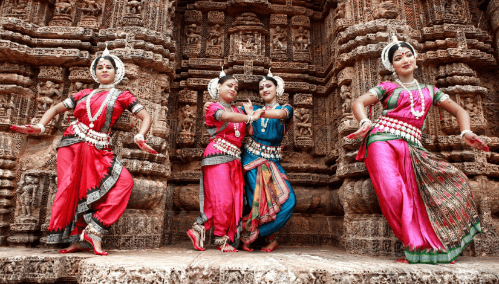

Khajuraho
Khajuraho Dance Festival
Khajuraho Dance Festival is a famous cultural festival held at Khajuraho Temples in Madhya Pradesh. It is organized by the Madhya Pradesh Kala Parishad to promote Indian classical dance. The festival began in the 1970s to highlight India’s dance heritage. Dancers perform styles like Bharatanatyam, Kathak, Odissi, and Kuchipudi. Performances take place in front of the beautifully lit temples. Its significance is in preserving classical dance and promoting tourism.